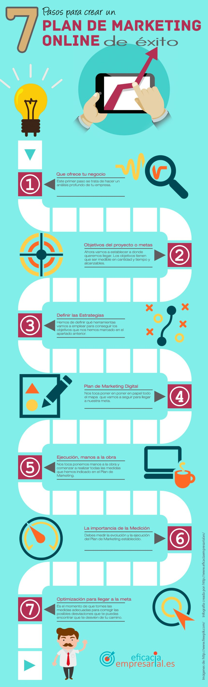

Actividad 1: Desarrollo. Fases de la Elaboración del Plan de Marketing
Esta sesión será en la que el profesor expondrá al grupo-clase de una manera más detallada los contenidos del tema se llevará a cabo en los 55 minutos de la sesión. Además de exponer de una manera práctica, motivadora los contenidos de la UT6, contará con la participación en todo momento del alumnado invitándoles en todo momento a participar y aportar esos conocimientos que ya han adquirido tanto por el contacto con las empresas como por sus conocimientos académicos.
Agrupamiento: clase
Metodología: aprendizajes significativos y preconcepciones del alumnado.
Objetivos:
- Analizar los puntos de partida y los objetivos de la empresa.
- Elaborar planes de marketing.
Recursos: Teams, videos, páginas web, entorno Mircrosoft 365.
Comenzamos la sesión de enseña expositiva con los siguiente puntos:
1.- Plan de Marketing. Partimos del momento que la empresa recoge por escrito que camino seguirá le empresa para conseguir las actividades de marketing que busca el equilibrio entre satisfacer al consumidor y obtención de beneficios.

2.- Tomando como punto de partida, las fases de la elaboración de un Plan de Marketing, se expondrá: cuáles son las distintas fases del Plan de Marketing, las diferencias que existen dependiendo del tipo de producto, servicio que ofrezcan y los objetivos que cada uno persiga (aumento de cuota de mercado, notoriedad de la marca, posicionamiento, competitividad,..) También diferirán si son empresas públicas o privadas. Cada uno de ellos necesitará unas adaptaciones particulares que se irán viendo según se vayan llevando a la práctica.
Por tanto el plan de marketing es una guía que va marcando las diferentes etapas y acciones a desarrollar en cada una de ellas, para poder alcanzar con éxito los objetivos que la empresa se haya marcado.